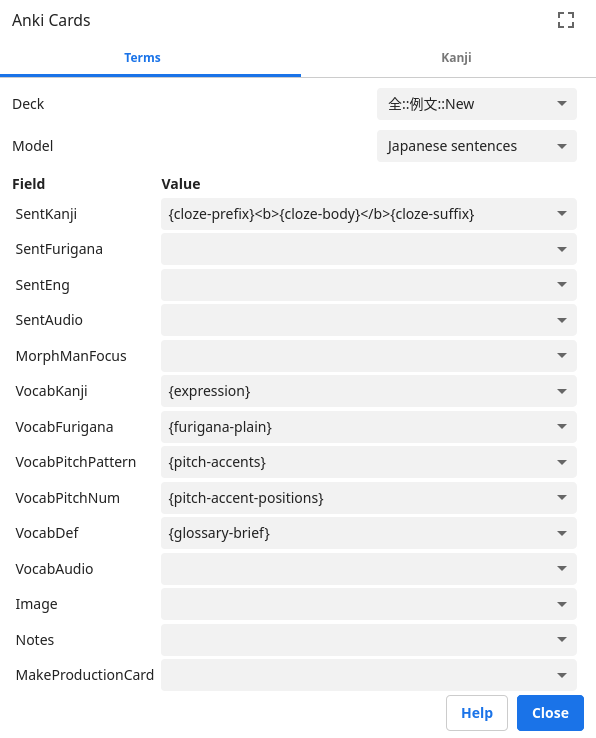
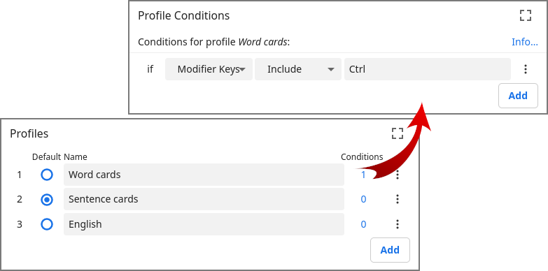
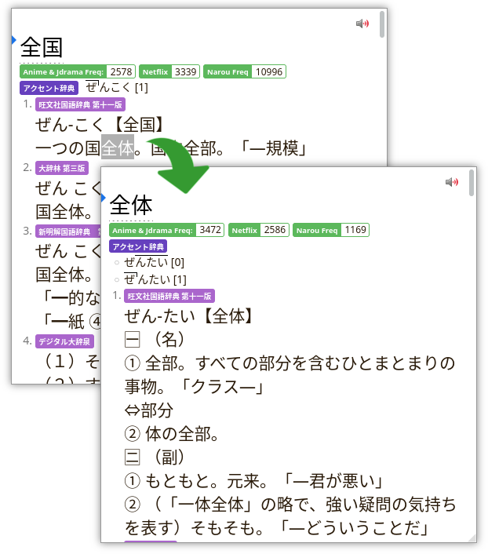
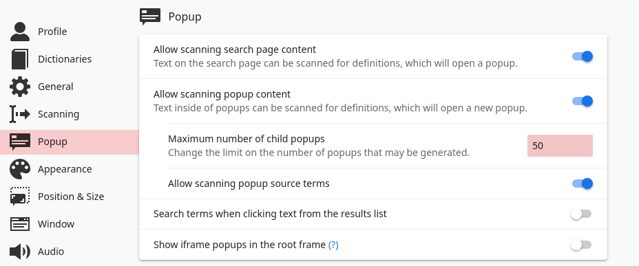
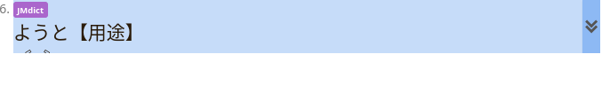
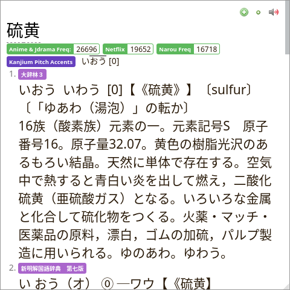

Setting up Yomichan
Yomichan is a browser extension with a pop-up dictionary that allows you to look up unknown words with the hover of a mouse. On top of that Yomichan can be set up to create Anki cards from the words which you look up.
The process of picking sentences from your immersion and making Anki cards is called sentence-mining or sentence-picking. Each mined sentence has to contain one unknown piece of information, which is referred to as target word.
You don't necessarily have to pick an entire sentence, but if you're a TSC user it is not necessary to keep mined items short. When you're out in the wild picking sentences, select the ones that are interesting to you. Your goal is not to mine every word.
Installation
Yomichan is not being developed anymore. The original developer quit. At Ajatt-Tools we have made our own fork and continue to maintain it. We call it Rikaitan.
Rikaitan is available for Firefox-based web browsers. We recommend LibreWolf as your everyday web browser.
In order to be able to create Anki cards later you need the
AnkiConnect plugin.
It can be installed by opening Anki and going to
Tools > Add-ons > Get Add-ons... > Code: 2055492159 > OK.
If you used Yomichan before, import and export your setting by going to "Settings" > "Backup" > "Export/Import settings".
Will Rikaitan be available in the Chrome Web Store?
To upload an extension to the Chrome Web Store I need to register as a developer. The process requires paying a one-time registration fee. I can't pay it because none of my bank cards work with Google Pay. I hope this problem will be resolved eventually. If you want to help, please contact me.
Download dictionaries
Yomichan needs dictionary files to operate.
Dictionaries are distributed in .zip archives.
The archives should not be unzipped before installation.
You can find dictionary files here.
Configuration
The great thing about Yomichan is that it is customizable.
To access the settings page, click the
 button in the browser toolbar and choose "Settings".
In the bottom left corner enable "Advanced" to access hidden settings mentioned in this guide.
button in the browser toolbar and choose "Settings".
In the bottom left corner enable "Advanced" to access hidden settings mentioned in this guide.
Install dictionaries
To install a new dictionary, select "Dictionaries" on the sidebar, then click "Configure installed and enabled dictionaries…". The "Import" button in the bottom lets you choose a dictionary file.
For the first month or two after finishing kanji and basic vocabulary you're going to need only the English JMdict and optionally the English KANJIDIC. The first one is a very popular Japanese to English dictionary which you can find on jisho.org, the second one lets you see information about individual kanji. Apart from regular dictionaries for looking up vocabulary, there are grammar dictionaries and frequency lists. They are not must have, but consider exploring them too.
After you begin transitioning to Japanese-Japanese dictionaries, install them as well.
My favorite ones are 大辞林, 明鏡 and 新明解.
Pitch accents
Pitch accent is taken very seriously among Japanese learners. If you don't know pitch accent of a word, you don't know how it's pronounced.
To view pitch accent information in Yomichan popups, you need to install Kanjium dictionary. You can find it in the archive with all the other dictionaries you downloaded earlier.
To configure how pitch accent information is displayed, go to "Settings" > "Appearance" > "Pitch accent display styles". Enable "Downstep notation" and "Downstep position". I don't recommend enabling "Graph" because it doesn't show connections between moraes and their corresponding pitches.
Anki settings
To set up Anki integration, go to "Settings" > "Anki". Make sure "Enable Anki integration" is on, Anki is running and AnkiConnect is installed.
I advise you to disable the "Check for card duplicates" option unless you are sure that you need duplicate checking. Although it's a very useful feature, it is known to significantly affect performance to the point when Yomichan and Anki freeze and become unusable.
Scroll down and click "Configure Anki card format..." to select the Note Type for your mining deck.
The settings below are for the Japanese sentences Note Type. You can install it by importing this example deck.
We have a repository with user-created Note Types. It includes a very convenient system of importing and exporting the Note Types, and everyone is welcome to add their templates by making a pull request.
Settings overview
| Field | Value |
|---|---|
SentKanji |
{cloze-prefix}<b>{cloze-body}</b>{cloze-suffix} |
VocabKanji |
{expression} |
VocabFurigana |
{furigana-plain} |
VocabPitchPattern |
{pitch-accents} |
VocabPitchNum |
{pitch-accent-positions} |
VocabDef |
{glossary-brief} |
Screenshot

Commentary
- The value set for
SentKanjilets you automatically make the target word bold. Alternatively, replace it with{sentence}if you don't want it to be highlighted. SentFuriganais left empty. You may have noticed that Yomichan can add furigana to sentences with the{sentence-furigana}tag. Unfortunately, it uses a html-basedrubyformat which is hard for the user to edit. I recommend leaving theSentFuriganafield blank and using the Furigana add-on to generate furigana.SentEngcan be used together with subs2srs and premade decks such as AnkiDrone Starter Pack.MorphManFocusis a field for compatibility with Morphman.SentAudioandImageare to be filled by mpvacious.- If you set
VocabDefto{clipboard-text}you can manually select which part of the definition you want by pressingCtrl+Cbefore you make a card. VocabAudiois left empty. I don't recommend assigning{audio}because all default audio sources in Yomichan often provide samples with incorrect pronunciation and pitch accent. For example, you can getははinstead ofはばorぼせいinstead ofほせい. It's pretty bad. Furthermore, enabling{audio}significantly slows down card creation because Yomichan has to access pronunciation servers and download audio every time.
Handlebars
Usually the term handlebars is used to refer to the formatting of Anki cards created by Yomichan. Handlebars can be configured by going to "Settings" > "Anki" > "Configure Anki card templates...". Some people may recommend you to modify the handlebars but no matter what you do your settings are going to be broken on next Yomichan update anyway, and you can't prevent it.
Instead, it is advised to modify styling of your Note Type directly in Anki. For example, you can remove dictionary bullet points by copying the code below. The following snippet was taken from the Japanese sentences Note Type.
ul, ol {
list-style-type: none;
display: inline;
margin: 0px;
padding: 0px;
}
Popup size
The default pop up box size is rather small
which makes it difficult to work with monolingual dictionaries.
To increase its size, go to "Settings" > "Position & Size" and set the size to a higher value.
I use 480x480.
Styling
Yomichan offers rich capabilities for styling thanks to the use of CSS. The appearance of the popup window can be changed by going to "Settings" > "Appearance" > "Configure custom CSS...".
Most people keep their settings rather simple, but there are a few important modifications I'd like to mention.
Hide furigana. When you use the popup window, it shows you all kanji readings right away. This is not desirable because you want to recall the readings yourself before looking them up. The code below makes furigana appear only when you hover over words.
ruby rt { visibility: hidden; } ruby:hover rt { visibility: visible; }Increase font size. By default, Yomichan uses very small font. If you're using monolingual dictionaries, you're going to find the font uncomfortable. To increase its size, the following code can be used:
.gloss-item { font-size: 1.5em; }Adjust the size to suit your preference.
Make tags smaller. Tags aren't that important, so it makes sense to shrink them a bit to save space.
.tag { font-size: 12px; }Popup page in the Anki-card style. Makes your popups look similar to your targeted sentence cards.
body { background-color: #fffaf0; color: #2a1b0a; } [class^=tag], [class*=icon] { filter: sepia(50%); } [class^=tag] { font-size: 0.9rem; font-weight: 300; }Miscellaneous. CSS can do almost everything.
To find the right class name to apply your styles to, right-click on the part of the popup window that you're interested in and choose "Inspect". You will be presented with the HTML structure of the popup. Classes are defined inside HTML tags. For example, the class name for the tag below is
gloss-content.<span class="gloss-content" lang="ja">...</span>
Profiles
Set up a second profile to make it easier to switch between mining simple word cards and targeted sentence cards. Go to "Settings" > "Profile" > "Configure profiles...". Under "Conditions" select:
if "Modifier Keys" "Include" "Ctrl"

Profile Conditions.
The modifier key can be anything.
To insert Ctrl you sometimes have to press both Ctrl and Shift at the same time,
which appears to be a bug of Yomichan.
Change which profile is being modified under "Profile" > "Editing profile",
go back to Anki settings and set up a second Note Type to mine simple word cards.
An example Note Type can be found
here.
Now when you press Shift+Ctrl while reading,
Yomichan is going to use the new profile.
Replacement patterns
If Yomichan fails to look up words such as
近々 or 屡々,
try adding the following replacement pattern.
Go to "Settings" > "Translation" > "Configure custom text replacement patterns…",
then press "Add".
- Pattern:
(.)々 - Replacement:
$1$1
Recursive lookups
If you're someone who just started using monolingual dictionaries, you may often require looking up words inside definitions.

Recursive lookups.
To enable this feature, go to "Settings" > "Popup". Change the following settings:
- Allow scanning popup content - on.
- Maximum number of child popups - any high number.
- Allow scanning popup source terms - on.

Settings.
Keyboard shortcuts
There's one thing about Yomichan that probably annoys everyone. That's having to scroll down to find the right definition. Before you lose your mind, change some keyboard shortcuts. Go to "Settings" > "Shortcuts" > "Configure standard keyboard shortcuts…".
- Go to previous entry:
K - Go to next entry:
J
These shortcuts let you jump between entries faster. You don't have to scroll anymore, especially if you keep many monolingual dictionaries installed.

Shortcuts.
Collapse dictionaries
Go to "Appearance" > "Configure collapsible dictionaries…". Here you can hide definitions from some dictionaries.

Screenshot.
This feature can be useful for going monolingual. After you install monolingual (Jp-Jp) dictionaries, hide JMdict and other bilingual dictionaries to avoid associating Japanese words with their English translations.
This is different from simply uninstalling bilingual dictionaries. Often there are words that Jp-Jp dictionaries don't define. Yomichan won't be able to parse such words if JMdict is not installed.
Miscellaneous
- "General" > "Show the welcome guide on browser startup": disable.
- "Scanning" > "Scan delay":
0. - "Popup Position & Size" > "Scale": adjust to your preference.
- "Text Parsing" > "Show space between parsed words": disable.
- "Clipboard" > "Enable search page clipboard text monitoring": enable.
Usage
Yomichan popups appear when you hover over Japanese text while holding down the Shift key.
You can try it with this text:
私達はイラク出身です。

Yomichan popup.
Inside the box you can see definitions grouped by dictionary.
To hide the window press Esc or click outside the box.
If you have KANJIDIC installed, clicking on individual kanji in the expression
will bring up additional information about the kanji.
Yomichan Search
is a tool that helps analyze text in the system clipboard.
It is helpful when reading manga, books, or watching videos in mpv.
By clicking on
 you can hear an approximate pronunciation of the selected word.
Unless you're using a custom pronunciation server, don't trust the default audio sources
and don't add the pronunciations to Anki for the reasons explained earlier.
you can hear an approximate pronunciation of the selected word.
Unless you're using a custom pronunciation server, don't trust the default audio sources
and don't add the pronunciations to Anki for the reasons explained earlier.
Yomichan Forvo Server for Anki 2.1 solves the problem with pronunciations by letting you add a custom audio source that features pronunciations made by native speakers. To install and set it up please follow the instructions on the add-on page. The add-on is also available on GitHub.
The  button
allows you to make Anki cards in one click.
Assuming you've configured your Note Type,
now you can create properly formatted targeted sentence cards while reading.
button
allows you to make Anki cards in one click.
Assuming you've configured your Note Type,
now you can create properly formatted targeted sentence cards while reading.
Tags: guide, dictionaries, yomichan